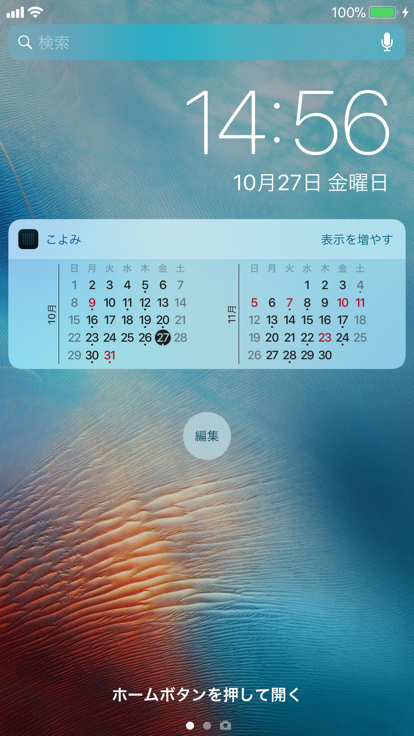

カレンダーの表示方法
月カレンダーは、Today ウィジェット と Apple Watch で表示することができます。
こよみiPhoneアプリは設定のみのアプリになり、月カレンダーを表示する機能はありません。
Today ウィジェット

Today ウィジェットとは、通知センター内にあるToday タブのコンテンツです。
ウィジェット内の日付をタップすると、Appleの「カレンダー」アプリが開きます。
「表示を増やす」をタップすると、前月、次月に表示を切り替えるボタンが表示されます。
ウィジェット追加方法
- ホーム画面またはロック画面で右にスワイプ
- 一番下までスクロールして、「編集」をタップ
- こよみのウィジェットを追加
Apple Watch

過去2ヶ月、未来10ヶ月分のカレンダーが表示されます。
アプリ追加方法
- iPhoneの「Watch」アプリを開く
- 「マイウォッチ」タブを選択
- 「こよみ」を選択
- 「AppをApple Watchで表示」をON
画面をタップすると、イベントの一覧を表示します。
ただし、イベントカレンダーの設定が無い場合には、表示されません。

参考資料
- Apple サポート:iPhone、iPad、iPod touch でウィジェットを使う
- Apple サポート: Apple Watch で App を使う